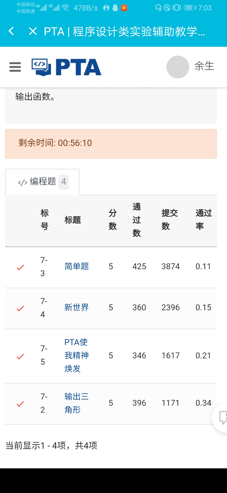

| 这个作业属于那个课程 | C语言程序设计II |
|---|---|
| 这个作业要求在哪里 | 《我的作业》 |
| 我在这个课程的目标是 | 了解c语言并做好该专业规划。 |
| 这个作业在那个具体方面帮助我实现目标 | 初步了解了c语言且做好了相应规化，并拓展了相关知识。 |
| 参考文献 | C语言程序设计（高等教育出版社），百度文献 |
软件工程是一个比较热门的行业，也是一门新行业，它是随着电脑的产生应运而生的，现在我们走入信息化时代，此行业也会越来越热门，我们也将成为此行业的中流砥柱。该行业所涉及的东西也十分广泛，数学英语都是不可拉下的，既然如此，大家对此专业含金量也应该充满信心，那让们认真学好每一课吧。
我们专业会有很多的时间需要学习，也只有学好了我们才会有更多的机会，所以我们应该争取变得更优秀。
只有初步认识（具体如下）
游戏：C语言的效率是一个很重要的原因。科学计算：在科学计算领域，FORTRAN是使用最多的语言之一。但是近年来，C语言凭借先进的数值计算库、泛型编程等优势在这一领域也应用颇多。
网络软件：C语言拥有很多成熟的用于网络通信的库，其中最具有代表性的是跨平台的、重量级的ACE库，该库可以说是C语言语言最重要的成果之一，在许多重要的企业、部门甚至是军方都有应用。
操作系统：在该领域，C语言是主要使用的编程语言。但是C语言凭借其对C的兼容性，面向对象性质也开始在该领域崭露头角。
能将c语言熟练掌握运用
能学会编写游戏等花里胡哨的程序
能掌握网络信息安全技术
能学会Java并做出成绩
大一当然要多玩玩，多参加社团，多到处走走，当然编程的话每天也会花三到四个小时学习，全面掌握老师所受，同时适当拓展，每天能写一百多行代码。
广泛社交，多交朋友一起努力前进。
也会适当锻炼身体，保持身体健康。
当然能拿的证也会尽量争取，只有积极向上才能越来越优秀。
